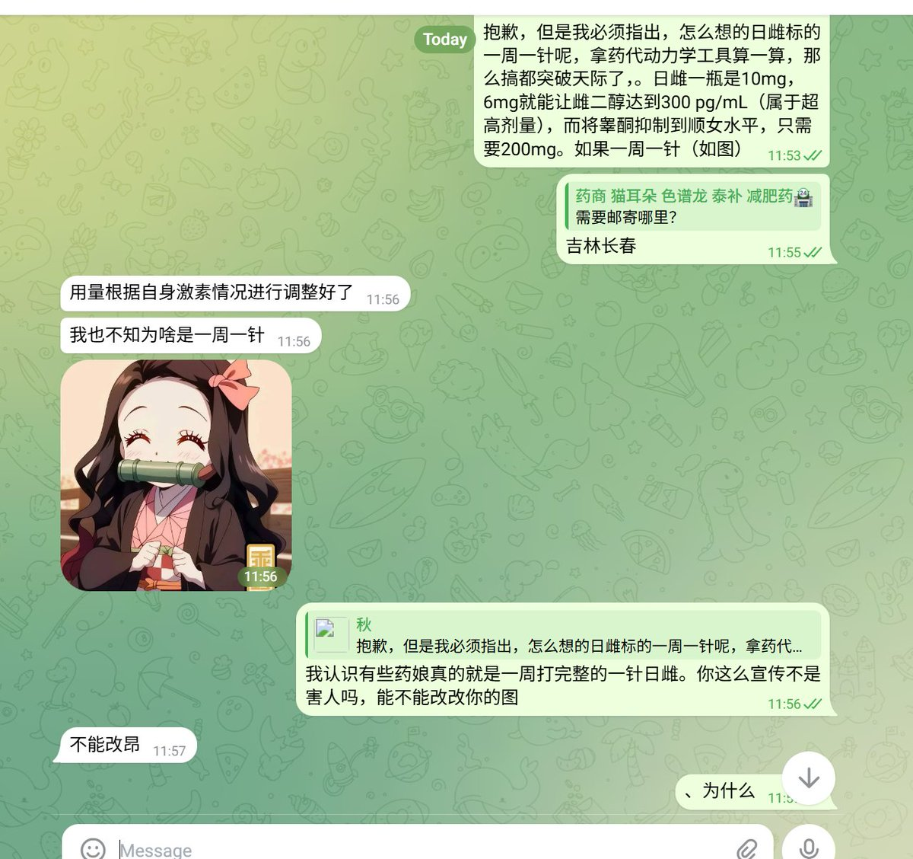
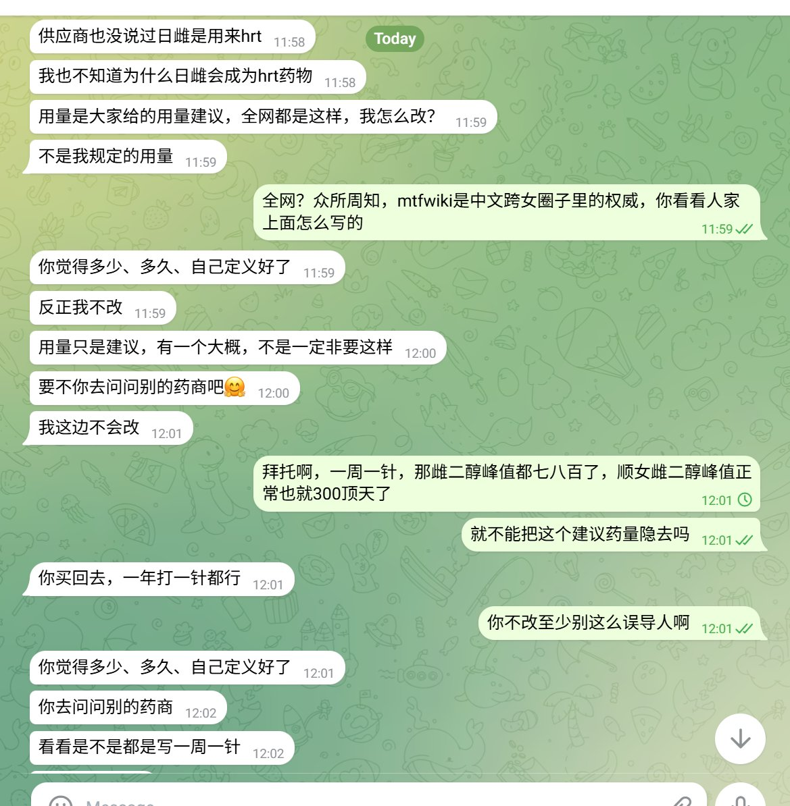

みかんミックス🍥
@mikanmkx
@lumuyuanMadoka2 如果能获得欧美那边多次用的注射剂我肯定也注射，但是一直都只见过自制的没见过正规货


鹿目圆○
@lumuyuanMadoka2
很好的展示了什么叫无商不奸。
一边买hrt药物，一边说不知道为什么日雌会成为hrt药物，又一边给我推销其他的hrt方案(还给出他那不可信的使用说明)
这是人吗，还有良知有底线吗？？一周用10mg戊酸雌二醇针剂，那叫od，那叫过量用药
就为了让人觉得针剂1安瓿/次，不浪费也不需要考虑保存问题，还能多买点 https://t.co/3Ff62hoKsq